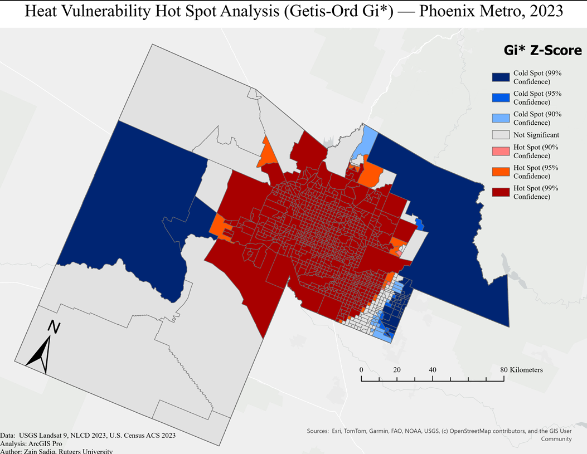

40.4862° N, 74.4518° W — New Brunswick, NJRutgers University — Class of 2027
Zain Sadiq
Geography × Data Science — GIS Analysis & Cartography
I turn satellite imagery and demographic data into maps and reports built for planners and policymakers — spatial analysis, remote sensing, and vulnerability modeling with an emphasis on environmental justice.
Geography and data-focused undergraduate with hands-on experience editing, processing, and analyzing geospatial datasets in ArcGIS Pro and ERDAS IMAGINE. Skilled in land surface temperature derivation, multi-source spatial analysis, cartography, and vulnerability index construction — translating satellite imagery and demographic data into publication-quality maps, technical reports, and data visualizations, with a consistent focus on environmental justice applications.
Tools & Skills
ArcGIS ProERDAS IMAGINERemote SensingSpatial AnalysisCartographyPythonR StudioTableauGIS Data EditingExcelJapanese — Fluent
Selected Work
Projects
Six case studies spanning remote sensing, vulnerability modeling, and spatial statistics — each geotagged to its study area.

images/phoenix-uhi.jpg
Maricopa County, AZ
Urban Heat Island & Vulnerability Analysis
33.4484°N 112.0740°W
Derived land surface temperature and NDVI from Landsat 9 imagery, then built a composite Heat Vulnerability Index — six physical and socioeconomic indicators combined through min-max normalization and weighted overlay — to map where heat exposure and social risk overlap.
Integrated FEMA flood hazard layers, CDC Social Vulnerability Index scores, and USGS elevation data into a bivariate choropleth showing where flood exposure and social vulnerability compound one another across census tracts.
ArcGIS ProSpatial AnalystFEMA NFHLCDC SVI
110 tracts at highest compound risk · concentrated along the coastal corridor
Processed NASA MOLA elevation data into a slope-suitability model for Mars landing sites, mapping historical missions — Viking through Perseverance — against terrain constraints.
ArcGIS ProMOLA DEMSite Suitability
Six historical landing sites mapped against terrain slope
Processed over a decade of Landsat imagery in ERDAS IMAGINE, extracting and reclassifying NDVI to track vegetation change across the city while correcting for atmospheric and sensor inconsistencies.
Compiled and cleaned housing price data across all five boroughs into an interactive Tableau dashboard, pairing comparative charts with map-based visualizations of spatial price disparity.
Applied conditional probability and Bayes' theorem in R to a 614-observation loan dataset, examining how prior conditions shift the probability of default.
RStatisticsConditional Probability
614 observations · full conditional probability workup